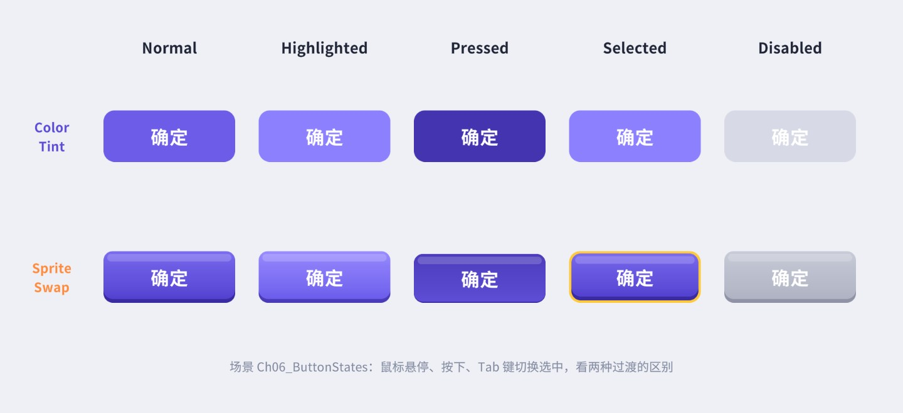
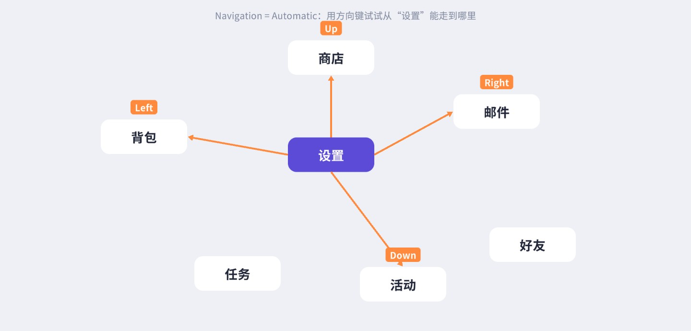
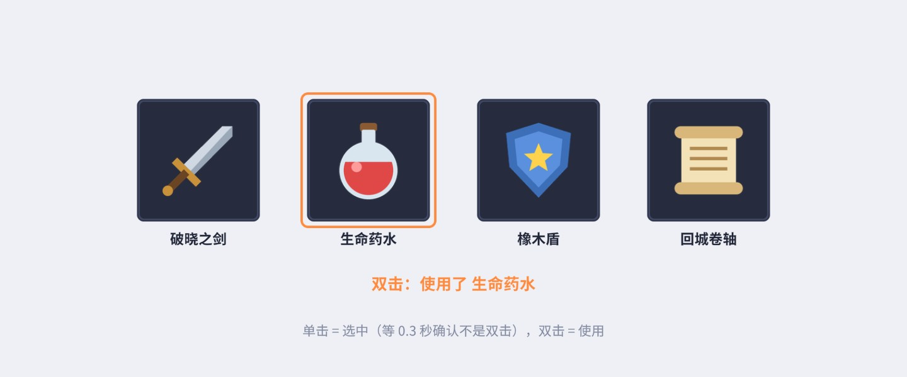
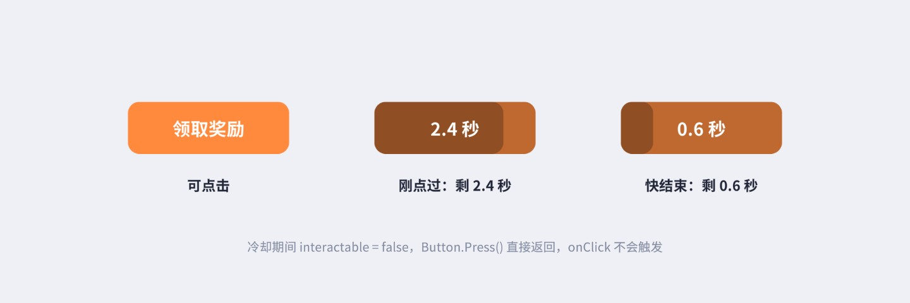
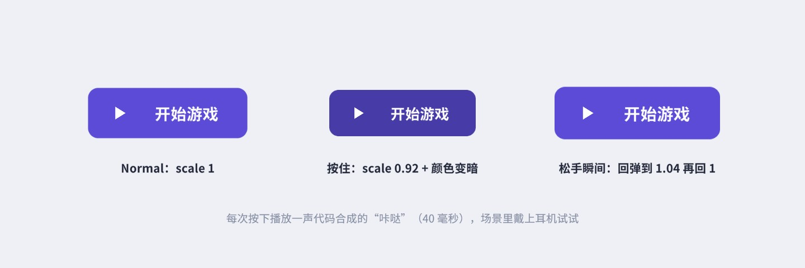
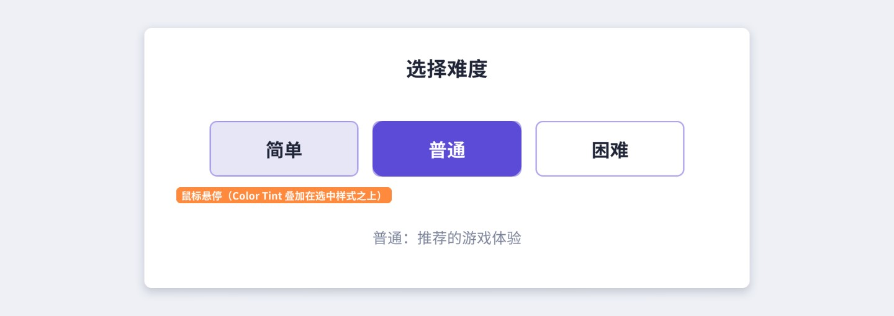
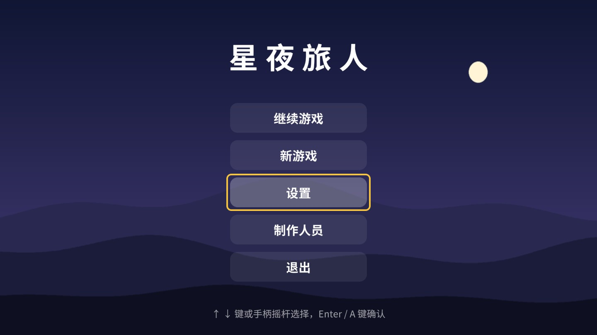
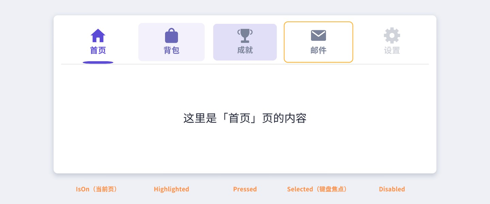

按钮是最简单的控件，也是最能体现 UGUI 设计的控件：Button 只有一百多行代码，它的能力几乎都来自父类 Selectable——五种交互状态、三种过渡方式、键盘手柄导航、interactable 与 CanvasGroup。这一章先把 Selectable 的状态机和导航算法读透，再讲 onClick 的几种绑定方式和闭包陷阱，最后做八个案例：五态对比、长按连发、双击、防连点、按下反馈、单选组、手柄菜单和自定义 Selectable 页签。
在 Hierarchy 右键 ，得到一个名为 Button 的物体和它下面的 Text (TMP) 子物体。图 6-1 是本书 UIKit 创建的按钮（结构和菜单创建的完全一致，只是多了一个图标）：
根物体上有两个关键组件：Image 负责画按钮的底图，Button 负责交互。Button 本身不画任何东西，它通过 Target Graphic 字段引用那个 Image，在状态变化时改它的颜色或精灵。文字是独立的子物体，和交互无关——所以按钮按下时默认只有底图变色，文字不变（想让文字也变色，见 6.3 节的做法）。
Inspector 里除了最下面的 On Click ()，其余所有字段都属于 Selectable。Button 的源码去掉注释后不到 60 行，完整摘出来：
// 摘自 com.unity.ugui 1.0.0 Runtime/UI/Core/Button.cs（去掉了注释）
public class Button : Selectable, IPointerClickHandler, ISubmitHandler
{
[Serializable]
public class ButtonClickedEvent : UnityEvent {}
[FormerlySerializedAs("onClick")]
[SerializeField]
private ButtonClickedEvent m_OnClick = new ButtonClickedEvent();
public ButtonClickedEvent onClick { get { return m_OnClick; } set { m_OnClick = value; } }
private void Press()
{
if (!IsActive() || !IsInteractable())
return;
UISystemProfilerApi.AddMarker("Button.onClick", this);
m_OnClick.Invoke();
}
public virtual void OnPointerClick(PointerEventData eventData)
{
if (eventData.button != PointerEventData.InputButton.Left)
return;
Press();
}
public virtual void OnSubmit(BaseEventData eventData)
{
Press();
if (!IsActive() || !IsInteractable())
return;
DoStateTransition(SelectionState.Pressed, false); // 键盘/手柄确认时，手动闪一下按下态
StartCoroutine(OnFinishSubmit());
}
private IEnumerator OnFinishSubmit()
{
var fadeTime = colors.fadeDuration;
var elapsedTime = 0f;
while (elapsedTime < fadeTime)
{
elapsedTime += Time.unscaledDeltaTime;
yield return null;
}
DoStateTransition(currentSelectionState, false);
}
}
从这段代码可以确定几件常被问到的事：
IPointerClickHandler 的语义（由输入模块判断，第 11 章）。按下后手指滑出按钮再松开，不算点击，这是有意的设计，让用户能“反悔”。OnSubmit，同样调用 Press，并用一个协程模拟出“按下再弹起”的视觉效果。Selectable 是 Button、Toggle、Slider、Scrollbar、InputField、Dropdown 等所有可交互控件的父类。它定义了五种选择状态（SelectionState）：
有意思的是，Selectable 并没有一个“当前状态”的字段。它只记录三个布尔标志，状态是每次需要时推导出来的：
// 摘自 com.unity.ugui 1.0.0 Runtime/UI/Core/Selectable.cs
private bool isPointerInside { get; set; } // 指针在矩形里
private bool isPointerDown { get; set; } // 按下了还没抬起
private bool hasSelection { get; set; } // 被 EventSystem 选中
protected SelectionState currentSelectionState
{
get
{
if (!IsInteractable())
return SelectionState.Disabled;
if (isPointerDown)
return SelectionState.Pressed;
if (hasSelection)
return SelectionState.Selected;
if (isPointerInside)
return SelectionState.Highlighted;
return SelectionState.Normal;
}
}
if 的顺序就是状态优先级：Disabled > Pressed > Selected > Highlighted > Normal。三个标志由各个事件回调维护，每次改完都调用 EvaluateAndTransitionToSelectionState() 重新推导并播放过渡（图 6-3）：
理解了优先级，几个“诡异”现象就有了解释：
OnPointerDown：只要按钮可交互且 Navigation 不是 None，按下时就会 EventSystem.current.SetSelectedGameObject(gameObject)，于是 hasSelection 变成 true。鼠标移走后 isPointerInside 变 false，但 Selected 的优先级高于 Normal，按钮停在 Selected 状态。而 Selected Color 的默认值和 Highlighted Color 一样，看起来就像“卡在高亮”。解决办法按需选择：把 Selected Color 改成和 Normal 一样；或者把按钮的 Navigation 设成 None（不参与导航的按钮点击时不会被选中）；纯触屏项目也可以在点击后 EventSystem.current.SetSelectedGameObject(null)。但如果游戏支持手柄，Selected 状态恰恰是玩家知道“焦点在哪”的唯一线索，不能一关了之（案例 6.7）。// 摘自 Selectable.cs：按下时顺带“选中”自己
public virtual void OnPointerDown(PointerEventData eventData)
{
if (eventData.button != PointerEventData.InputButton.Left)
return;
// Selection tracking
if (IsInteractable() && navigation.mode != Navigation.Mode.None && EventSystem.current != null)
EventSystem.current.SetSelectedGameObject(gameObject, eventData);
isPointerDown = true;
EvaluateAndTransitionToSelectionState();
}
图 6-4 是五种状态在两种过渡方式下的实拍（截图用 DoStateTransition 直接设置状态；配套场景里可以用鼠标和 Tab 键亲手触发）：

状态推导出来后，DoStateTransition 根据 Transition 字段决定怎么表现：
// 摘自 Selectable.cs，DoStateTransition（有删节）
switch (state)
{
case SelectionState.Normal:
tintColor = m_Colors.normalColor;
transitionSprite = null; // Normal 不换图：用 Image 自己的 sprite
triggerName = m_AnimationTriggers.normalTrigger;
break;
case SelectionState.Highlighted:
tintColor = m_Colors.highlightedColor;
transitionSprite = m_SpriteState.highlightedSprite;
triggerName = m_AnimationTriggers.highlightedTrigger;
break;
// Pressed / Selected / Disabled 同理……
}
switch (m_Transition)
{
case Transition.ColorTint:
StartColorTween(tintColor * m_Colors.colorMultiplier, instant);
break;
case Transition.SpriteSwap:
DoSpriteSwap(transitionSprite);
break;
case Transition.Animation:
TriggerAnimation(triggerName);
break;
}
// 摘自 Selectable.cs
void StartColorTween(Color targetColor, bool instant)
{
if (m_TargetGraphic == null)
return;
m_TargetGraphic.CrossFadeColor(targetColor, instant ? 0f : m_Colors.fadeDuration, true, true);
}
CrossFadeColor 修改的是 Target Graphic 的 CanvasRenderer 颜色，不是 Image.color。最终颜色 = 精灵颜色 × Image.color × CanvasRenderer 颜色。这带来三个重要结论：
image.color（例如案例 6.6 的选中样式）和 Color Tint 的过渡是叠加关系，互不覆盖。Fade Duration 是颜色渐变时长，默认 0.1 秒，使用不受 timeScale 影响的时间（CrossFadeColor 的第三个参数 ignoreTimeScale = true），暂停菜单里按钮照样有过渡。
为每种状态指定一张精灵（Normal 用的就是 Image 本身的 Source Image）。实现只有一行：image.overrideSprite = newSprite;。overrideSprite 是 Image 上一个“临时覆盖”的精灵，不为空时优先显示它，状态回到 Normal 时设回 null，Source Image 本身始终不变。适合按下时图案有明显变化的按钮（图 6-4 第二行：按下时立体按钮的“厚度”消失、面板下沉，Selected 多了一圈金边）。注意 Sprite Swap 没有渐变，而且换精灵会触发网格和材质的重建，比 Color Tint 贵一些；状态图最好在同一个图集里，否则切换时还可能打断合批。
状态变化时给同物体上的 Animator 设置一个 Trigger（Normal / Highlighted / Pressed / Selected / Disabled 五个 Trigger 名可以改）。在 Button 的 Transition 选 Animation 后，点 Auto Generate Animation，Unity 会生成一个 Animator Controller 和五个空的动画片段，你在 Animation 窗口里给每个状态录制缩放、旋转、颜色等任意属性的变化。
注意 Animator 写回的属性会覆盖你在代码或 Inspector 里设置的值：例如按钮的 Normal 片段里录了 Scale = 1，之后代码再改 localScale 就会被每帧覆盖回去。
它最灵活，但代价也最大：Animator 只要处于激活状态，每帧都会求值并写回它控制的属性，即使按钮静止不动；写回 RectTransform 或 Graphic 属性还会不断标脏，引起重建。界面上有几十个用 Animation 过渡的按钮时，开销会很可观（第 15、20 章详细分析）。本书的建议是：常规按钮用 Color Tint 或 Sprite Swap，需要缩放、弹跳等动效时用代码补间（案例 6.5），Animation 过渡只留给少数需要复杂动画的特殊按钮。
PC 和主机游戏要支持键盘方向键、手柄摇杆在按钮之间移动焦点。EventSystem 的输入模块把方向输入转成 OnMove 事件发给当前选中的物体，Selectable 根据 Navigation 设置找到下一个目标并选中它：
Inspector 中 Navigation 旁边的 Visualize 按钮会在 Scene 视图里用黄色箭头画出所有导航关系，调导航时一定要打开它。
// 摘自 Selectable.cs，FindSelectable（有删节）
public Selectable FindSelectable(Vector3 dir)
{
dir = dir.normalized;
Vector3 localDir = Quaternion.Inverse(transform.rotation) * dir;
// 起点不是中心，而是自己矩形边缘上朝 dir 方向的那个点
Vector3 pos = transform.TransformPoint(GetPointOnRectEdge(transform as RectTransform, localDir));
float maxScore = Mathf.NegativeInfinity;
Selectable bestPick = null;
for (int i = 0; i < s_SelectableCount; ++i)
{
Selectable sel = s_Selectables[i];
if (sel == this) continue;
if (!sel.IsInteractable() || sel.navigation.mode == Navigation.Mode.None) continue;
var selRect = sel.transform as RectTransform;
Vector3 selCenter = selRect != null ? (Vector3)selRect.rect.center : Vector3.zero;
Vector3 myVector = sel.transform.TransformPoint(selCenter) - pos;
float dot = Vector3.Dot(dir, myVector);
if (dot <= 0) continue; // 在反方向上的不要
float score = dot / myVector.sqrMagnitude; // 越近、越正对着 dir，分数越高
if (score > maxScore) { maxScore = score; bestPick = sel; }
}
return bestPick;
}
评分 dot / |v|² 等价于“方向夹角的余弦 ÷ 距离”：既要近，又要正。源码注释给了一个形象的比喻：从起点朝目标方向吹一个圆形气球，气球最先碰到谁的中心就选谁（图 6-5）。这里有三个要点：候选范围是场景里所有已启用的 Selectable（静态列表 s_Selectables），不分界面、不分 Canvas；不可交互和 Navigation = None 的会被跳过；只看中心点，不看矩形大小。
布局整齐的网格菜单，Automatic 的结果通常没问题；布局不规则时就可能出人意料。图 6-6 是一个实际的例子：从“设置”出发，四个方向的目标是在截图时调用 FindSelectableOnUp/Down/Left/Right 真实算出来的——“好友”从任何方向都到不了，向下会去“活动”而不是看起来更近的“任务”。

所以菜单类界面推荐用 Explicit 显式指定。四个方向的目标可以在 Inspector 里拖，也可以用代码按网格批量设置（案例 6.7 的 NavigationUtil）。另外，FindSelectableOnUp 等方法都是 virtual 的，自定义控件可以重写它们实现特殊的导航规则（例如跳过某些项）。
StandaloneInputModule 读取旧输入系统的 Horizontal / Vertical 轴（键盘方向键、WASD、手柄左摇杆）产生 Move 事件，读取 Submit / Cancel 按钮（回车、空格、手柄 A / B 键）产生 Submit / Cancel 事件。如果项目使用新的 Input System 包，需要把 EventSystem 上的模块换成 InputSystemUIInputModule，它通过 Input Actions 资源绑定导航和确认（第 11 章）。无论哪种模块，没有选中物体时方向键不会产生任何效果——界面打开时必须主动选中一个起点。
能否交互由两个条件共同决定：
// 摘自 Selectable.cs
public virtual bool IsInteractable()
{
return m_GroupsAllowInteraction && m_Interactable;
}
bool ParentGroupAllowsInteraction()
{
Transform t = transform;
while (t != null)
{
t.GetComponents(m_CanvasGroupCache);
for (var i = 0; i < m_CanvasGroupCache.Count; i++)
{
if (m_CanvasGroupCache[i].enabled && !m_CanvasGroupCache[i].interactable)
return false; // 任何一层祖先的 CanvasGroup 不允许，就不允许
if (m_CanvasGroupCache[i].ignoreParentGroups)
return true; // 遇到“忽略父级”的 CanvasGroup 就停止向上找
}
t = t.parent;
}
return true;
}
m_Interactable 是按钮自己的 Interactable 勾选框；m_GroupsAllowInteraction 由祖先链上的 CanvasGroup 决定。CanvasGroup 发生变化时，Unity 会通知它下面的所有 UIBehaviour（OnCanvasGroupChanged），Selectable 重新计算并刷新外观。所以要禁用一整块面板里的所有控件，不需要逐个改按钮，在面板上加一个 CanvasGroup、把 Interactable 取消即可，面板里的按钮会一起显示为 Disabled。
CanvasGroup 还有一个容易混淆的属性 Blocks Raycasts：它控制这块区域是否接收射线。两者的区别：
| Interactable = false | Blocks Raycasts = false | |
|---|---|---|
| 控件外观 | 显示为 Disabled | 不变 |
| 点击 | 射线仍然打在这些控件上，但它们不响应（点击被“吃掉”） | 射线直接穿过，点到下面的东西 |
| 典型用途 | 加载中禁止操作、条件不满足时置灰 | 淡出动画期间让点击穿透、纯展示的浮层 |
另外一个细节：把当前选中的按钮设为不可交互时，interactable 的 setter 会 EventSystem.current.SetSelectedGameObject(null) 清掉选中，手柄玩家的焦点会因此“丢失”，案例 6.4 和 6.7 会处理这个问题。
onClick 是一个 UnityEvent，它有两种监听：
button.onClick.AddListener(...)，不会被序列化，每次运行都要重新添加，通常写在 Awake / Start 里。两种监听在 Invoke 时都会被调用（持久监听在前）。第 1 章已经演示过这两种基本用法，这里讲几个进阶话题。持久监听也可以用编辑器代码添加，配套场景 Ch06_Closure 右上角的按钮就是这样绑定的：
// 编辑器代码（Ch06/Editor/Shots.cs）：给按钮添加一个带字符串参数的持久监听 UnityEventTools.AddStringPersistentListener(button.onClick, demo.LogFromInspector, "这条监听存在场景文件里");
UnityEditor.Events.UnityEventTools 只能在编辑器里用，适合写“按命名规则自动绑定”的工具；运行时代码请始终用 AddListener。
动态生成一排按钮时，下面的写法是 C# 新手几乎必踩的坑：
lambda 表达式 () => Log("错误写法", i) 捕获的不是 i 当时的值，而是变量 i 本身。for 循环里的 i 在整个循环中只有一个，循环结束后它的值是 5（跳出循环的那个值），所以五个按钮点下去都显示“第 5 个”。解决方法是在循环体内声明一个新的局部变量：每次迭代都是一个新变量，各自被捕获。C# 5 之后 foreach 的循环变量每次迭代都是新的，不存在这个问题（第 4 章的 HitLog 就是 foreach），但 for 循环依然如此，这一点在 C# 规范里一直没有改变。
RemoveListener 按委托是否“相等”来查找要移除的监听。对于方法组 button.onClick.AddListener(OnClickStart)，之后 RemoveListener(OnClickStart) 能正确移除，因为两次创建的委托指向同一个对象的同一个方法，判定为相等。但对于 lambda：
button.onClick.AddListener(() => Buy(itemId)); button.onClick.RemoveListener(() => Buy(itemId)); // ✗ 移除不掉：这是另一个新的 lambda 实例
要能移除，就把 lambda 存进字段：m_OnBuy = () => Buy(itemId); button.onClick.AddListener(m_OnBuy);，移除时传同一个 m_OnBuy。另外两条规则：RemoveAllListeners() 只清除运行时监听，不会清除 Inspector 里的持久监听；列表项这种会被复用的物体（第 18 章），重新绑定数据前要先移除旧监听，否则点一下会触发好几次——最常见的写法是复用时先 RemoveAllListeners() 再 AddListener。
把按钮放进真实界面后，还会遇到一些和单个按钮无关、和“按钮在哪里、和谁在一起”有关的问题。
手机上手指的接触面积远大于鼠标指针。主流的设计规范都给出了最小触控尺寸（苹果的人机界面指南建议不小于 44×44 pt，Material Design 建议 48×48 dp），换算到 1920×1080 参考分辨率的竖屏/横屏界面，通常意味着按钮至少 100 像素左右见方。视觉上想做得小巧时，不必把按钮图做大：给 Target Graphic 设置负的 Raycast Padding（第 4 章）就能在不改变外观的情况下扩大点击范围。相邻的小按钮之间要留出间距，否则扩大后的点击区会互相重叠，Hierarchy 中靠后（绘制在上面）的那个会抢走点击。
按钮里的文字、图标如果开着 Raycast Target，射线最先命中的是它们，而不是按钮的底图。点击照样有效，是因为 EventSystem 派发点击时会从命中的物体向上寻找第一个实现了 IPointerClickHandler 的物体（ExecuteEvents.GetEventHandler，第 11 章细讲），找到的正是父物体上的 Button。不过 Button 的悬停、按下状态同样依赖这种向上冒泡，所以通常没有问题；真正要注意的是反过来的情况——按钮上面盖着一个不相干的、开着 Raycast Target 的透明图，射线被它截住，而它的祖先里没有按钮，点击就“消失”了。
ScrollRect 里的按钮会遇到“想滑动列表，结果触发了按钮”的问题。UGUI 的处理是：按下后指针移动超过 EventSystem 的 Drag Threshold（默认 10 像素）就进入拖拽，输入模块此时会给按下的物体发送 PointerUp，并把这次按下标记为“不可点击”（PointerInputModule 中 pointerEvent.eligibleForClick = false），于是松手时不会触发 onClick，拖拽事件则交给 ScrollRect。高分辨率手机上 10 像素太小，手指稍一抖动就变成拖拽，点按钮很难点中，常见做法是按屏幕 DPI 放大 Drag Threshold（第 9、11 章）。
两根手指可以同时按住两个不同的按钮，每根手指有自己的 PointerEventData，状态互不干扰；HoldRepeatButton 这类组件也天然支持。需要注意的是“同一个按钮被两根手指按”的情况：第一根手指抬起时 Button 就会退出 Pressed 状态，第 11 章会讨论如何按 pointerId 区分手指。
Button.Press 里有一行 UISystemProfilerApi.AddMarker("Button.onClick", this);：在 Profiler 的 UI 模块里，每次点击都会打一个标记，可以看到这一帧哪个按钮被点击、点击回调花了多少时间。点击后界面卡顿时，先看这里。onClick 回调里如果要做重活（实例化界面、读档、发请求），尽量拆到协程或异步任务里，至少先给出视觉反馈（按下态、加载圈），再开始干活。
结合本章读过的源码，按钮不响应时可以按下面的顺序检查（完整的排查流程图见第 21 章）：
Button.onClick 标记确认点击是否到达：到达了说明是回调逻辑的问题，没到达才是事件系统的问题。反过来，有时问题是“不该点到的点到了”：alpha 为 0 的按钮、被别的界面盖住但本身仍处于激活状态的按钮，都还能接收射线（GraphicRaycaster 只看矩形和 Raycast Target，不看透明度）。隐藏界面时，要么 SetActive(false)，要么配合 CanvasGroup 把 alpha 和 Blocks Raycasts 一起关掉（第 15 章的淡入淡出、第 20 章的隐藏方式对比）。
可以在 Inspector 里给任意物体绑定 PointerEnter、PointerDown、Drag 等所有事件，看起来比写组件省事。但它实现了全部事件接口，挂上之后这个物体会“拦截”所有类型的事件，包括它根本不关心的拖拽、滚轮，导致父级 ScrollRect 收不到拖拽——这是“列表里某一项拖不动”的常见原因。本章的案例都用“只实现需要的接口”的小组件，原因就在这里（第 11 章有详细分析）。
动态生成的按钮、统一换肤的工具，都需要用代码设置 Selectable 的属性。有几个和 C# 值类型相关的写法要特别注意。
ColorBlock、SpriteState、Navigation 都是结构体。button.colors 返回的是一份拷贝，直接写 button.colors.normalColor = Color.red; 编译器会报错（不能修改返回值的成员）。正确写法是“取出、修改、整体赋值回去”：
var cb = button.colors; // 拷贝一份
cb.normalColor = new Color32(0x6C, 0x5C, 0xE7, 255);
cb.highlightedColor = new Color32(0x8C, 0x80, 0xFF, 255);
cb.fadeDuration = 0.08f;
button.colors = cb; // 整体赋值：setter 里会立即刷新当前状态的外观
button.transition = Selectable.Transition.SpriteSwap;
button.spriteState = new SpriteState { pressedSprite = pressed, disabledSprite = disabled };
var nav = button.navigation;
nav.mode = Navigation.Mode.Explicit;
nav.selectOnDown = nextButton;
button.navigation = nav;
这几个 setter 内部都会调用 OnSetProperty()，在编辑器非运行状态下立即（instant）刷新外观，运行时则带过渡刷新。ColorBlock.defaultColorBlock 提供了 Unity 的默认配色，可以在它的基础上修改。
其他常用的 API：
EventSystem.current.SetSelectedGameObject(gameObject)，但会检查 alreadySelecting，避免在 OnSelect 回调里递归选中。
FindSelectableOnUp() 等按当前 Navigation 设置求某个方向的目标，自定义控件可重写。
Selectable.allSelectablesArray场景中所有已启用的 Selectable（会分配一个新数组；高频使用时用 AllSelectablesNoAlloc 填入自己的数组）。可以用来写“检查所有按钮的导航是否闭合”之类的调试工具。
targetGraphic / image过渡作用的 Graphic；image 是把 targetGraphic 转成 Image 的便捷属性（Sprite Swap 用它）。
最后提醒一点 Target Graphic 的来历：Selectable 的 Awake() 里有一句 if (m_TargetGraphic == null) m_TargetGraphic = GetComponent<Graphic>();，编辑器里添加组件时的 Reset() 也做同样的事。所以先有 Image、再 AddComponent<Button>()，Target Graphic 会自动指向这个 Image；但如果先加 Button、后加 Image（AddComponent 时 Awake 立即执行，那时还没有 Graphic），或者想让过渡作用在子物体的 Image 上，就必须手动 button.targetGraphic = image;，否则 Color Tint 没有任何效果。射线检测则只看物体及其子物体上有没有开着 Raycast Target 的 Graphic，和 Target Graphic 无关。
目标：做出图 6-4 那样的两排按钮，一排用 Color Tint，一排用 Sprite Swap，在场景里用鼠标和键盘亲手体验五种状态。
怎么选：Color Tint 只需要一张底图，所有状态共用，换肤只改颜色，内存和包体最省，适合大多数扁平风格的按钮；Sprite Swap 每个状态一张图，适合立体、拟物、像素风这类“按下时形状会变”的按钮，代价是美术工作量和图集空间翻几倍；注意一个按钮只能选一种 Transition，不要试图在子物体上再挂一个 Selectable 来管理图标的颜色——子物体的 Selectable 会截走射线、成为另一个可导航的焦点，按钮反而不工作了。当一个按钮需要底图、文字、图标等多个元素同时随状态变化时，直接用案例 6.8 的自定义 Selectable，由一个组件统一管理所有元素的状态表现。
观察：Color Tint 第四列 Selected 和第二列 Highlighted 颜色一样，这是有意沿用 Unity 默认值的习惯，用来说明“点完按钮为什么像卡在高亮”。Sprite Swap 那一排的按下态文字下移了 3 像素，和图片的下沉对齐——Sprite Swap 只换图，文字位置需要自己处理（可以在案例 6.8 的思路里一起管理）。
目标：商店购买数量的 + / − 按钮：点一下加减 1；按住不放，0.4 秒后开始连续加减，并且越来越快；到达上限或下限时按钮自动禁用，长按也随之停止。
思路：Button 只在“抬起”时报告一次点击，按住期间没有任何回调。写一个组件监听按下（IPointerDownHandler）和抬起 / 离开（IPointerUpHandler / IPointerExitHandler），在 Update 里按时间表重复触发。它和 onClick 并存：短按时组件还没到首次延迟就松手了，只有 onClick 生效。
讲解：
m_NextTime += m_Interval（而不是 = now + interval）也是为了这一点。扩展方向：连发时给数字一点缩放反馈（结合第 5 章的数字跳动）；支持输入框直接输入数量（第 8 章数字步进器）。
目标：背包里单击物品是“选中”，双击是“使用”，两种操作互不干扰。
思路：难点不在识别双击，而在区分单击和双击——第一次点击发生时，你不知道会不会有第二次。所以单击要等一个时间窗（0.3 秒），这期间没有第二次点击，才确认为单击。StandaloneInputModule 其实已经在统计连击：PointerEventData.clickCount 在 0.3 秒内连续点击会累加（源码里 private const float doubleClickTime = 0.3f;），判断 eventData.clickCount == 2 就能识别双击，但它不会帮你“推迟单击”。下面的组件同时处理两件事：
m_DelaySingle 提供了两种策略。延迟单击（默认）：单击和双击绝对互斥，代价是单击的响应会晚 0.3 秒。立即单击：单击马上响应，双击时会先收到一次单击再收到双击——如果“单击 = 选中、双击 = 使用”，先选中再使用完全合理，这种情况下用立即单击手感更好。按业务语义选择。

注意：这个组件挂在普通 Image 上就能工作（只要 Raycast Target 开着），不需要 Button。如果物体上同时有 Button，onClick 会在每次点击时都触发，和双击逻辑并存，要想清楚是否需要。移动端的“双击”体验普遍不好，很多游戏改用“单击选中、再点一次已选中的物品 = 使用”或长按菜单。
目标：“领取奖励”按钮点击后进入 3 秒冷却，期间按钮置灰并显示倒计时，遮罩从右向左退去；冷却结束自动恢复。另外提供一个全局的防抖工具，保护网络请求这类跨按钮的操作。
思路：利用 6.1 节读到的 Press()：if (!IsActive() || !IsInteractable()) return;。点击后立刻把 interactable 设为 false，之后无论用户点多快，onClick 都不会再被调用。
讲解：
anchorMax.x，遮罩宽度按比例变短，两端圆角保持不变。按钮级的冷却解决的是“同一个按钮被狂点”。有时需要的是“同一个操作在短时间内只能发生一次”，不管从哪个按钮触发（商店列表里每个“购买”按钮都发同一个请求），用一个按键名做全局节流更合适：

真实项目里：网络请求类按钮，冷却应该持续到请求返回（成功或失败），而不是一个固定时间。把 StartCooldown 改成“请求开始时禁用、回调里恢复”，再加一个超时兜底，防止请求丢失后按钮永远是灰的。
目标：按下时按钮缩小到 92%，松开时带一点回弹恢复；每次按下播放一声短促的“咔哒”。音效用代码合成，工程里不需要任何音频文件。
讲解：
“咔哒”声是 40 毫秒的 1800 Hz 正弦波加一点白噪声，再乘一个快速衰减的指数包络。AudioClip.Create + SetData 在运行时生成，所有按钮共享一个静态的 clip。真实项目当然会用音效师制作的音频，但这个例子说明了一个结构上的要点：反馈逻辑应该做成可挂载的组件，而不是写在每个按钮的点击回调里。统一的按钮手感（缩放、音效、震动）只需要在预制体上挂一个组件。

移动端提示：触屏没有悬停，Highlighted 状态几乎用不到，按下反馈就是用户唯一的触感确认，比 PC 上重要得多；可以再配合 Handheld.Vibrate 或平台的轻震动接口。
目标：难度选择“简单 / 普通 / 困难”，同一时间只有一个处于选中样式，选择变化时通知外部。
思路：Toggle + ToggleGroup 是 UGUI 内置的方案（第 7 章）。这里用普通 Button 实现，一来演示“业务状态由谁管理”，二来很多设计里的单选项本来就是按钮的样子。
讲解：
int index = i;，原因见 6.6 节。
目标：主菜单五个选项，打开时自动选中第一项；方向键 / 手柄上下移动，到底后循环；一个金色高亮框平滑跟随焦点；鼠标点空白处后焦点丢失，再按方向键能自动找回；回车 / A 键确认。
第一步：显式导航。一列菜单用 Automatic 也能工作，但无法“到底循环”（Wrap Around 只对 Horizontal / Vertical 模式有效），而且界面上如果还有别的按钮，焦点可能被吸走。用代码按网格设置 Explicit 导航：
Navigation 是结构体，button.navigation.selectOnUp = x 这种写法改的是副本，编译器会直接报错；必须构造一个完整的 Navigation 再整体赋值回去。
第二步：选中与焦点找回。
讲解：
StandaloneInputModule.ActivateModule，通常就是 EventSystem 启动时）生效一次，界面反复打开关闭时还是要在代码里选。1 - e^(-speed·dt) 的插值系数与帧率无关）。比起“每个按钮自带一个选中框”，跟随框的移动轨迹本身就在告诉玩家焦点从哪里来、到哪里去。
扩展方向：Cancel 键（Esc / 手柄 B）返回上一级，需要一个界面栈（第 16 章）；打开弹窗时要把导航“关”在弹窗内部，否则方向键会把焦点移到弹窗后面的按钮上——用 Explicit 导航，或者给背后的界面加 CanvasGroup 并关闭 Interactable（不可交互的控件不会被导航选中）。
目标：底部页签栏，每个页签由图标、文字、下方指示条组成。悬停时文字变色并出现浅色底，按下时轻微缩小，键盘焦点在上面时显示橙色焦点框，当前页签显示为主题色并带指示条，禁用的页签半透明。
思路：这么多元素随状态变化，Color Tint 只能管一个 Graphic，Sprite Swap 只能换一张图，Animation 又太重。最干净的做法是继承 Selectable，重写 DoStateTransition：导航、状态推导、interactable、CanvasGroup 支持全部白送，我们只决定“每种状态长什么样”。点击要自己实现，因为点击是 Button 的功能，不是 Selectable 的。
讲解：
IsOn（是不是当前页签）是业务状态，由 TabBar 管理；Selectable 的 Selected 是交互状态（键盘焦点）。一个页签可以是当前页但没有焦点，也可以有焦点但不是当前页。把它们分开表达（指示条 vs 焦点框），键盘和手柄用户才不会迷惑。currentSelectionState 主动刷新一次。currentSelectionState 是 protected 的，子类可以直接用。OnValidate（Inspector 改任何字段时）和 Reset 也会调用 DoStateTransition，这时引用可能还没拖好。作者第一次搭场景时，代码给字段逐个赋值，每赋一个就触发一次 OnValidate，在第一个字段赋值时就报了空引用——所以要检查所有用到的引用。base.DoStateTransition 让 Inspector 里的 Transition 设置照样生效（本例设为 None）。还有一个继承 Selectable（或 Button）时一定会遇到的问题：新加的字段在 Inspector 里看不到。因为 UGUI 给 Selectable 注册了自定义编辑器 SelectableEditor，它只画 Selectable 自己的属性，并且对子类同样生效。解决方法是写一个继承 SelectableEditor 的编辑器，把自己的字段补画出来：

扩展方向：同样的套路可以写出各种自定义控件——带长按进度的按钮、可以拖动排序的列表项、带“新”角标的入口按钮。只要它需要“可交互状态 + 导航”，就继承 Selectable；只需要接收点击，实现 IPointerClickHandler 就够了。第 7 章会看到 Toggle、Slider 也是同样的结构：Selectable 提供交互状态，子类添加自己的值和事件。